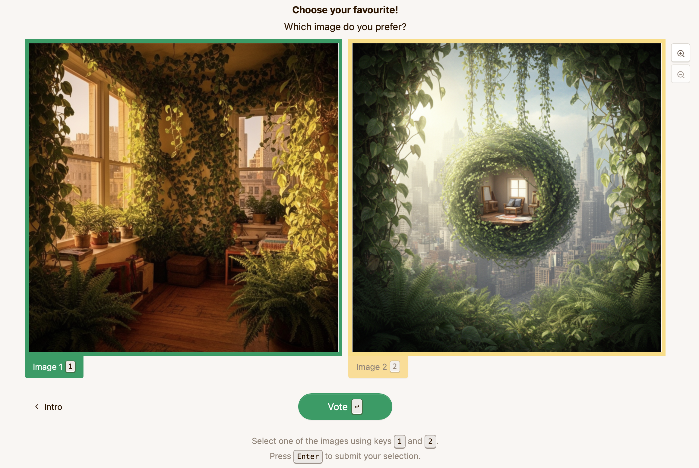
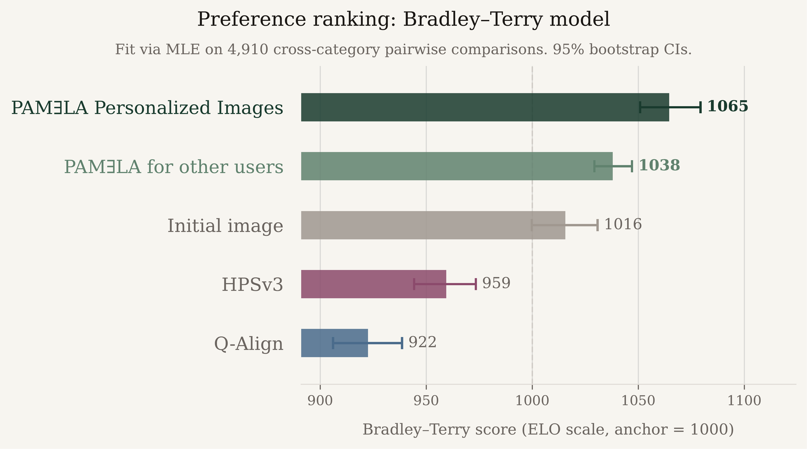
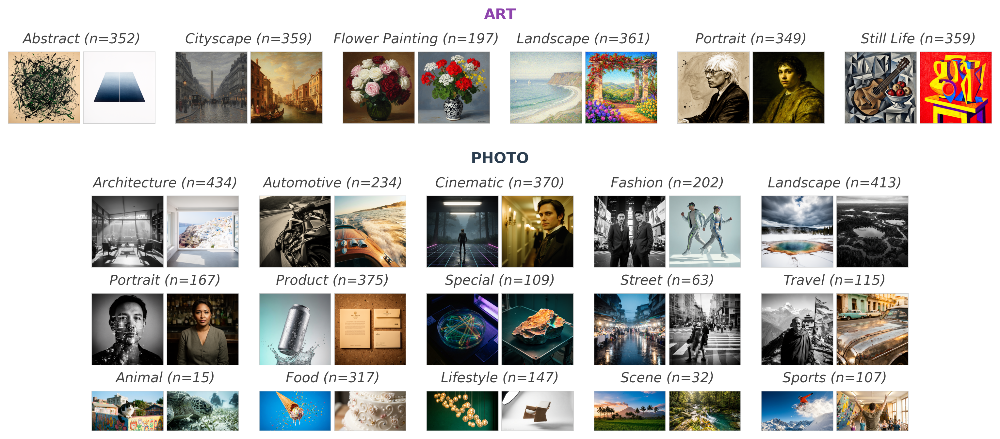

TL;DR
- The problem: Text-to-image models optimize for average taste, but aesthetics are subjective.
- Our solution: We propose a personalized benchmark dataset (70K ratings, 15 users per image) and reward model called PAMƎLA.
- The result: PAMƎLA steers generations toward individual taste by changing compositional attributes such as lighting, camera angle, and viewpoint.
Key Findings
Abstract
Modern text-to-image (T2I) models generate high-fidelity visuals but remain indifferent to individual user preferences. While existing reward models optimize for "average" human appeal, they fail to capture the inherent subjectivity of aesthetic judgment. In this work, we introduce a novel dataset and predictive framework, called PAMƎLA, designed to model personalized image evaluations. Our dataset comprises 70,000 ratings across 5,000 diverse images generated by state-of-the-art models (Flux 2 and Nano Banana). Each image is evaluated by 15 unique users, providing a rich distribution of subjective preferences across domains such as art, design, fashion, and cinematic photography. Leveraging this data, we propose a personalized reward model trained jointly on our high-quality annotations and existing aesthetic assessment subsets. We demonstrate that our model predicts individual liking with higher accuracy than the majority of current state-of-the-art methods predict population-level preferences. Using our personalized predictor, we demonstrate how simple prompt optimization methods can be used to steer generations towards individual user preferences. Our results highlight the importance of data quality and personalization to handle the subjectivity of user preferences. We release our dataset and model to facilitate standardized research in personalized T2I alignment and subjective visual quality assessment.
Results in Detail
Existing reward models degrade image quality
We first compare PAMƎLA against global baselines (HPSv3 and Q-Align). We find that consensus-driven models collapse to a generic, oversaturated "AI look" during optimization.

HPSv3 suffers from aesthetic instability across iterations, while Q-Align over-optimizes, losing both realism and prompt adherence. In contrast, PAMƎLA maintains high-fidelity photorealism. Instead of artificially boosting saturation, it steers images by altering compositional attributes, such as lighting, camera angle, and viewpoint.

PAMƎLA preserves realism while personalizing
We observe that PAMƎLA prioritizes realism even when generating inherently surreal concepts. We test this using a prompt about "floating mossy rocks". The initial baseline image defaults to a heavily stylized, digital art aesthetic. However, PAMƎLA steers subsequent iterations toward a physically plausible rendering, displaying the surreal subject matter in realistic textures and lighting.

Users prefer personally optimized images
To validate that our optimization produces images that users actually prefer, we conduct a pairwise preference study in which participants judge images without any knowledge of how they were generated. This allows us to assess whether personalized optimization yields meaningful perceptual improvements over both the unoptimized base images and images optimized with generic, non-personalized reward models.

Images personalized with PAMƎLA to the evaluating participant's own preferences achieve the highest score (1065), followed by images optimized with PAMƎLA for other participants (1038). Both significantly outperform the initial, un-optimized image (1016), with non-overlapping 95% confidence intervals. This demonstrates the effectiveness of PAMƎLA in capturing human preferences and that this improvement is strongest when the image is tailored to the specific viewer. In contrast, optimizing for generic reward models harms perceptual quality. Images optimized with HPSv3 (959) and Q-Align (922) are both ranked significantly below the initial image, indicating that maximizing these metrics does not align with human preferences and in fact degrades the output relative to the un-optimized baseline image.

The PAMƎLA Benchmark
We release our PAMƎLA benchmark dataset, a large-scale dataset for image personalization with 70,000 ratings for 200 users.

The PAMƎLA Predictor
Visual and semantic features are extracted by a frozen SigLIP2 encoder;
user demographic and image metadata embeddings are produced by a frozen embedding encoder. All features are projected to a shared dimension,
assembled as a token sequence with a learnable [CLS] token,
and fused by a shallow transformer encoder. The [CLS] output
is passed to a linear head to predict a personalized aesthetic score.

BibTeX
@article{maerten2026pamela,
title = {Personalizing Text-to-Image Generation to Individual Taste},
author = {Maerten, Anne-Sofie and Verwiebe, Juliane and Karthik, Shyamgopal and Prabhu, Ameya and Wagemans, Johan and Bethge, Matthias},
journal = {arXiv preprint arXiv:XXXX.XXXXX},
year = {2026}
}